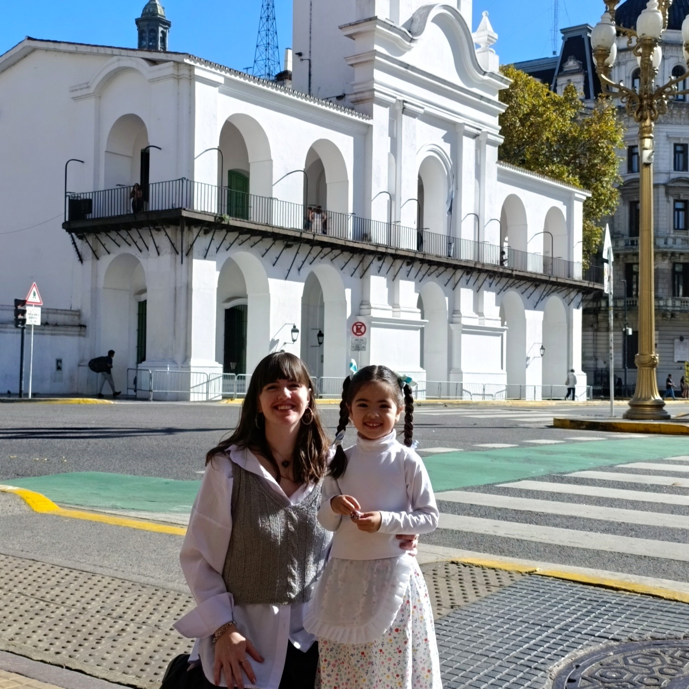

Mi nombre es Sofía y hace 12 años trabajo en una oficina como administrativa,
actualmente ejerzo el cargo de Encargada de un grupo de 6 personas.
Mis años en el Registro me ha permitido desarrollar habilidades de liderazgo,
organización y resolución de problemas pudiendo adaptarme a nuevos
desafíos ya que cumplí a lo largo de los años diferentes roles
(atención al cliente, manejo de caja y sistemas registrales)
Personalmente soy una persona muy inquieta por lo que
hoy estoy estudiando y empezando un nuevo camino laboral.
También estoy ampliando mis conocimientos, en busca de oportunidades para desarrollar
mis competencias en programación web.
En este momento busco un nuevo desafío donde pueda aplicar mis conocimientos
en un entorno dinámico y en constante crecimiento.
Soy mama de una pequeña de 4 que mantiene mi vida activa y divertida
Y entre esas cosas se llevan la gran parte de mi tiempo.
